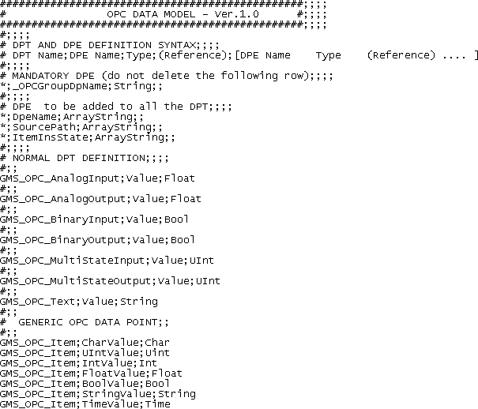

OPC Object Model Definition
If you need other Data Point Types (that is, object models) different from the default ones, you must manually edit the configuration data in a CSV file (a textual file containing comma separated values). For details on the CSV configuration file, see CSV File for Object Models.


Mandatory data point elements (DPE)
In the CSV file, you can also define some mandatory Data Point Elements (that is, properties) that must be added to all the Data Points Types (object models) created. In this case, the syntax to use is the same as for the standard Data Point Type, but the name of the Data Point Type must be an asterisk (*).
In the example above, the row
*;_OPCGroupDpName;String;;
will result in adding the _OPCGroupDpName DPE to all the data point types contained in the file.
Once you open a CSV file, for each object model you want to create, you must specify both the DPT and DPE:
# DPT Name;DPE Name;Type;(Reference);[DPE Name Type (Reference) .... ]
For example:
GMS_OPC_AnalogInput;Value;Float